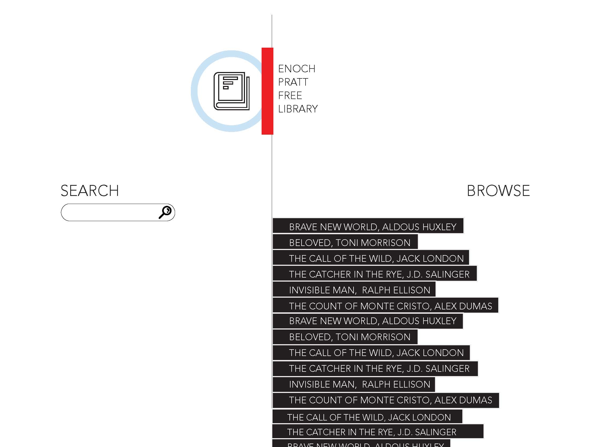
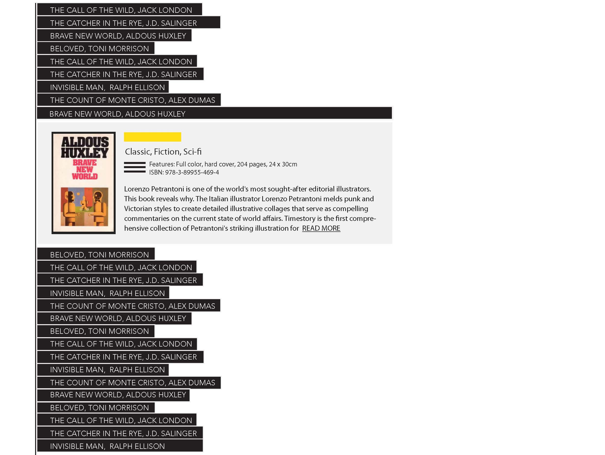
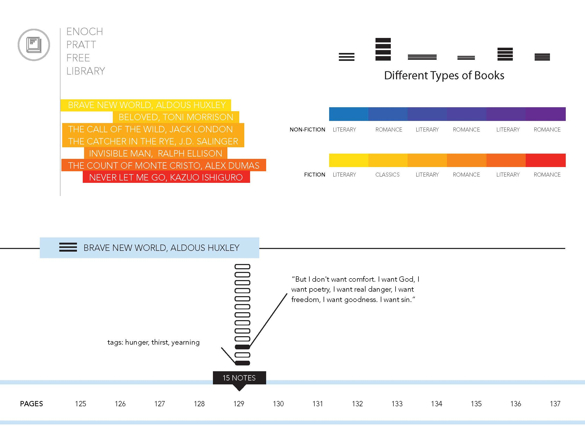
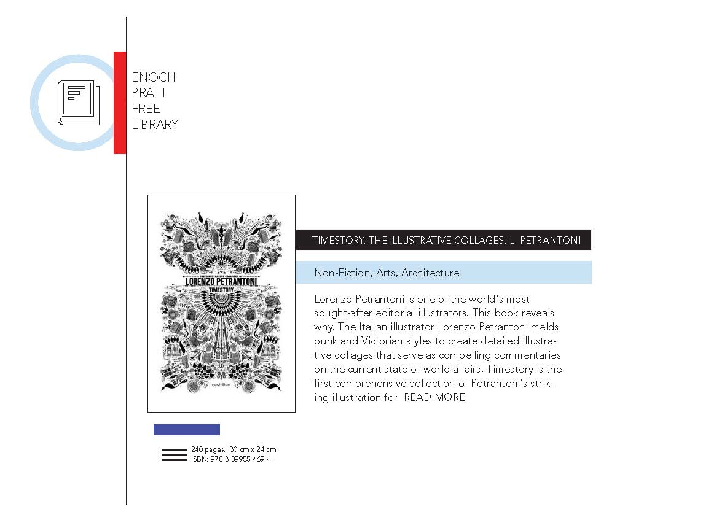
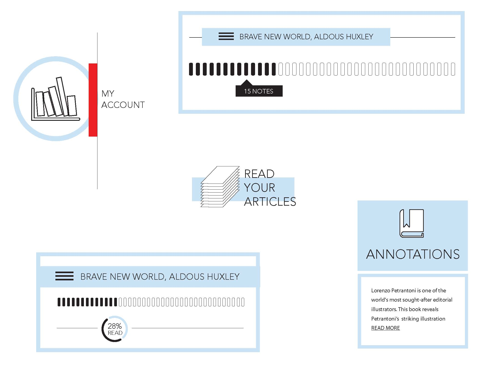

advanced web design :: class web site :: spring 2014
These are style tiles for the Enoch Pratt RE: Stack web design. I'd like to design the feeling of searching through volumes of books and navigation deeper into and out from text and content. These are prelimary tiles of looks I'm exploring.





Moves, is a simple app for the iOS that tracks your location continuously, uses very little power and is designed to run in the background.
This app is designed not to visualise data but encourage developers to use Moves API to download the data and map it as they please. Very open source. And then, Nicholas Felton created a Processing application, MMapper, for the Moves.app API to collect and map the places, distances and gps coordinates data.
The Enoch Pratt RE: Stack is an initiative to bring the index and access of the Public Library to a computer, device or mobile interface near you.
Think Dewey Decimal Classification system, intelligent web bots, every helpful and knowledgeable librarian you’ve ever met and avid to casual readers young and old. The focus is to create an interface that promotes connection between readers, the wealth of library knowledge and the joy and curiosity of reading.
http://amyleew.github.io/advancedweb14/ http://amyleew.github.io/advancedweb14/blog-1.html http://amyleew.github.io/advancedweb14/blog-2.html